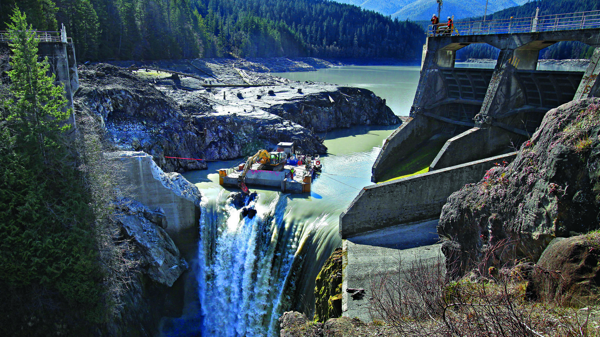

ENVIR 460 Un-Essay: Elwha River Project

Image Description: Deconstruction of one of the damns.
Epistemic Injustice & the Elwha River Project
Epistemic injustice refers to the ways in which a marginalized group’s knowledge and practices are disregarded or undervalued by more powerful groups and institutions [1]. This often leads to the exclusion of Indigenous peoples from decision-making processes related to conservation, as well as the imposition of Western conservation practices that may not align with Indigenous knowledge or cultural practices. This type of injustice can have harmful impacts on Indigenous communities, as it can lead to the loss of traditional knowledge, displacement from ancestral lands, and infringement on Indigenous sovereignty. Addressing epistemic injustice in the context of conservation requires recognizing the value and legitimacy of Indigenous knowledge and practices and involving Indigenous communities in decision-making processes related to conservation .
One such example is the Elwha River Project, which aims to restore the Elwha River ecosystem in Olympic National Park.In the case of the Elwha River Project, the Lower Elwha Klallam Tribe, who have lived along the river for thousands of years, were not initially included in the decision-making process about the project [2]. Their traditional knowledge of the river and its ecosystem was not recognized or valued by the project planners, and their voices were not given equal weight in the decision-making process. As a result, the project proceeded with little consideration of the Tribe's knowledge, cultural practices, and values, which are closely tied to the river and its ecosystem.
This lack of recognition and respect for the Lower Elwha Klallam Tribe's knowledge and values is an example of epistemic injustice. It perpetuates a historical pattern of colonialism and erasure of Indigenous knowledge and ways of knowing. It also reinforces the idea that Western scientific knowledge is the only valid form of knowledge, and that Indigenous knowledge is somehow inferior or less reliable.
Making Progress through Advocacy and Activism
However, as the project progressed, there were efforts to address this epistemic injustice. The Lower Elwha Klallam Tribe was eventually included in the decision-making process and their traditional knowledge and values were incorporated into the project. This was mostly due to Judge Boldt’s ruling in 1974, in which Western Washington tribes were made co-managers of salmon and steelhead fisheries with the state, setting a new precedent for the cooperative management of natural resources. [3] This recognition of Indigenous knowledge helped to create a more holistic and culturally sensitive approach to the project, which ultimately led to a more successful restoration of the river ecosystem.
The Elwha River Ecosystem and Fisheries Restoration Act, passed in 1992, mandated the removal of two hydroelectric dams on the Elwha River in Olympic National Park, Washington, and established a comprehensive plan for the restoration of the river ecosystem and fishery [4]. The legislation required the involvement of the Lower Elwha Klallam Tribe, who have lived along the river for thousands of years and have a strong cultural and economic connection to the river [5].
One of the key factors was the advocacy and activism of the Tribe itself. The Lower Elwha Klallam Tribe had been advocating for the restoration of the Elwha River for many years, and their efforts helped to raise awareness about the ecological and cultural significance of the river. This activism drew the attention of environmental organizations and government agencies, who recognized the importance of involving the Tribe in the decision-making process [6].
One tribal member recounts the long period of activism tribal leaders fought: “Our elders – nobody would listen to them, their voices weren’t heard – until the late 1960s or 70s and there was a lot of opposition immediately. It was unheard of to remove the dams. It took a lot of educating. . . . We are protectors of the salmon. Salmon and us are like family to each other. We need each other. A lot of the people who opposed are now in agreement that they need to come out. That is how we won the battle, just by educating” [6].
Additionally, as Guarino summarizes:“The Federal Energy Regulatory Commission (FERC) process by which private hydropower dams are licensed provided the Tribe with an opportunity to intervene in an effort to restore the river and its salmon fisheries. This occurred in 1986 when the tribe filed a motion to intervene. This intervention soon gained the support of several environmental groups. In 1992, after a protracted administrative process, Congress passed the Elwha River Ecosystems and Fisheries Restoration Act, which directed the United States Department of the Interior to study the feasibility of the river and fisheries restoration” [6, 7].
Image Description: New growth at the site of a previous dam [6].
Per the Elwha River Ecosystem and Fisheries Restoration Act, the Tribe's traditional knowledge and cultural practices were to be taken into account in the decision-making process for the restoration project. The restoration effort aimed to bring back thriving populations of salmon and other fish species, as well as to restore the river ecosystem to its natural state. Overall, the Elwha River Ecosystem and Fisheries Restoration Act was driven by a recognition of the ecological, cultural, and economic significance of the Elwha River and the need to restore its ecosystem and fishery.
In addition, the state of Washington and the federal government established a formal government-to-government relationship with the Lower Elwha Klallam Tribe, recognizing the Tribe's sovereignty and authority in managing their traditional lands and resources. This relationship helped to ensure that the Tribe's perspectives and knowledge were incorporated into the decision-making process for the Elwha River Project [6].
Bibliography
[1] R. Tsosie, “Indigenous peoples, anthropology, and the legacy of epistemic injustice 1,” The Routledge Handbook of Epistemic Injustice, pp. 356–369, 2017.
[2] E. Goodman, “Protecting Habitat for Off-Reservation Tribal Hunting and Fishing Rights: Tribal Comanagement as a Reserved Right,” Environmental Law, vol. 30, no. 2, pp. 279–361, Jan. 2000.
[3] “Historical Village Sites,” Lower Elwha Klallam Tribe, 28-Oct-2019. [Online]. Available: https://www.elwha.org/culture-history/historical-village-sites/. [Accessed: 12-Mar-2023].
[4] House Energy and Commerce, N. Dicks, J. McDermott, J. Miller, S. Morrison, and J. Unsoeld, Washington, D.C,, CD: 102nd Congress, 1991, pp. 1–7.
[5] “Frequently asked questions,” National Parks Service. [Online]. Available: https://www.nps.gov/olym/learn/nature/elwha-faq.htm. [Accessed: 12-Mar-2023].
[6] J. Guarino, “TRIBAL ADVOCACY AND THE ART OF DAM REMOVAL: THE LOWER ELWHA KLALLAM AND THE ELWHA DAMS,” American Indian Law Journal, vol. 2, no. 1, 2013.
[7] United States, Congress, National Park Service. Elwha River Ecosystem Restoration Implementation: Final Environmental Impact Statement., National Park Service, U.S. Dept. of the Interior, 2004, pp. 1–215.